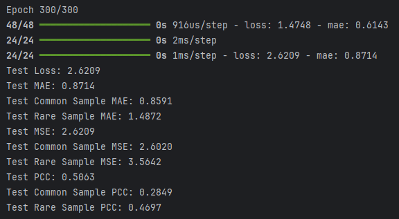
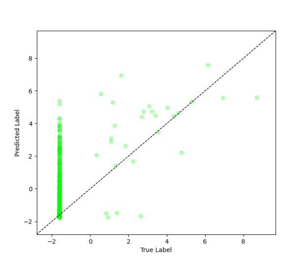

Evaluation Metrics Tutorial (Regression)#
Full Code: view source code
Train/Test Files: training data, testing data
This tutorial is based on the
balanced_fitregression tutorial found here
1. Metrics Overview#
Metrics can be used in two main ways:
Tracking metric values at every epoch via the
metricsparameter passed in at model compilationDoing a single calculation of the metric using
model.predict(x_test)andmetric.update_state(y_true, y_pred)
This tutorial will explore both options.
It is recommended that only 0 or 1 metrics be passed in to the compile call to save training time.
Imbal also supports producing a true vs. predicted plot for regression style problems.
2. Model Compilation Metrics#
Lightweight metrics, such as Mean Absolute Error (MAE) and Mean Squared Error (MSE), can be passed via the metrics
parameter in the model’s compile call. These metrics can be tracked every epoch while adding minimal overhead to model training.
model.compile(loss="mean_squared_error",
optimizer="adam",
metrics=[keras.metrics.MeanAbsoluteError(name="mae")],
)
3. Single Calculation Metrics#
Metrics can be calculated once after the model has been trained, unless it is desired to track it at every epoch.
Choosing to calculate these kinds of metrics once can save training time due to less computation being needed per epoch.
Notes on using Pearson Correlation (PCC) in Keras
Axis matters (
axisparameter): For single-output regression where tensors have shape(batch, 1), you should useaxis=0. This computes correlation across samples. Using the defaultaxis=-1would compute along the last dimension (size 1), which makes the variance zero and results inNaN.NaNs from zero variance: Pearson correlation is undefined if either
y_trueory_predhas zero variance in the dimension being computed. This can happen if:a batch has only one sample
predictions collapse to a constant value within a batch
targets in a batch are (nearly) constant
example: in highly imbalanced datasets, non-events may be preprocessed or rounded to an identical small value (e.g., all non-events ≈
1e-6). If an entire batch consists of these non-events, then all values are identical → variance = 0 → PCC becomesNaN.Batching issues during evaluation:
model.evaluate()computes metrics batch-by-batch. If even a single batch has zero variance, the PCC can becomeNaNfor the entire evaluation. This is especially common if the last batch is small or unstratified.Recommended approach: Compute PCC on the full test set at once using the Keras metric object (instead of relying on
model.evaluate())Alternative: If you must use
model.evaluate(), consider settingbatch_size=len(x_test)to avoid small or degenerate batches.
mse_metric = keras.metrics.MeanSquaredError(name="mse")
mse_metric.update_state(y_test, y_pred)
mse = mse_metric.result()
pcc_metric = keras.metrics.PearsonCorrelation(name="pcc", axis=0)
pcc_metric.update_state(y_test, y_pred)
pcc = pcc_metric.result().numpy()
4. Results#
results = model.evaluate(x_test, y_test)
loss, mae = results
print(f"Test Loss: {loss:.4f}")
print(f"Test MAE: {mae:.4f}")
print(f"Test MSE: {mse:.4f}")
print(f"Test PCC: {pcc:.4f}")
Example Output#

5. True vs. Predicted Plot#
Imbal supports plotting a basic true vs. predicted values plot for regression style problems.
imbal.regression.plot_true_vs_predictions(y_test, y_pred)
Results#
